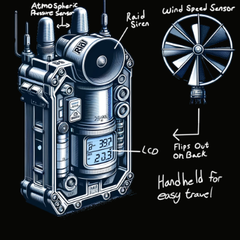
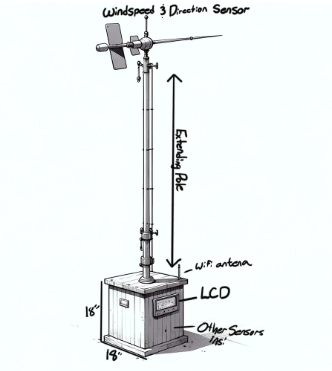

S.I.R.E.N. Project by Team 203
System for Immediate Response and Environmental Notifications
January 18, 2024
Project Motivation
Our design process was driven by the collective needs of users and innovative ideas from our team members. Each concept sketch integrates vital features like wind speed, direction, and atmospheric sensors. These designs address project goals while remaining within our technical capability.
Idea Generation
Each team member was responsible for creating 25 ideas, totaling 100. Due to some repetition, we ended up with about 70 usable ideas. These ideas were inspired by a prior assignment that focused on researching user needs.
We eventually sorted these ideas into four groups: hardware, design, features, and data. This approach allowed us to determine core functionalities and additional potential features.
Some common features across all designs include an integrated raid siren for immediate alerts, rechargeable batteries for sustainability, and data storage that can be uploaded when connected to Wi-Fi.
Concept Development
To develop the concepts, we applied several criteria for sorting, ranking, and grouping:
- Hardware specifications
- Design aesthetics
- Functional features
- Data management capabilities
From this consensus, we developed shared concepts, such as:
- An integrated raid siren for immediate alerts
- A rechargeable battery for sustainability
- Data storage on an SD card with automatic uploads when internet connectivity is available
Concept 1: SIREN Fire Alarm
Description: Designed for campsites, this device monitors fire size and alerts users if it becomes too large.

Key Features: Powered by a 9V battery, user-friendly, data logging on an SD card with weather information cloud upload when Wi-Fi is available, and a metal casing with an integrated temperature sensor for enhanced environmental monitoring.
Concept 2: The Handheld S.I.R.E.N.
Description: A portable device designed for campsite deployment, providing early warnings of forest fires or other disasters through built-in sensors.
Key Features: Integrated sensors for comprehensive data collection, powered by a user-replaceable 9V rechargeable battery, and encased in a durable chassis.
Concept 3: Mounted S.I.R.E.N.
Description: A stationary device designed for campsite installation, offering alerts for incoming storms or environmental hazards.
Key Features: A 6-foot extendable pole for optimal sensor placement, a display for real-time sensor data, ensuring users are well-informed of surrounding conditions.